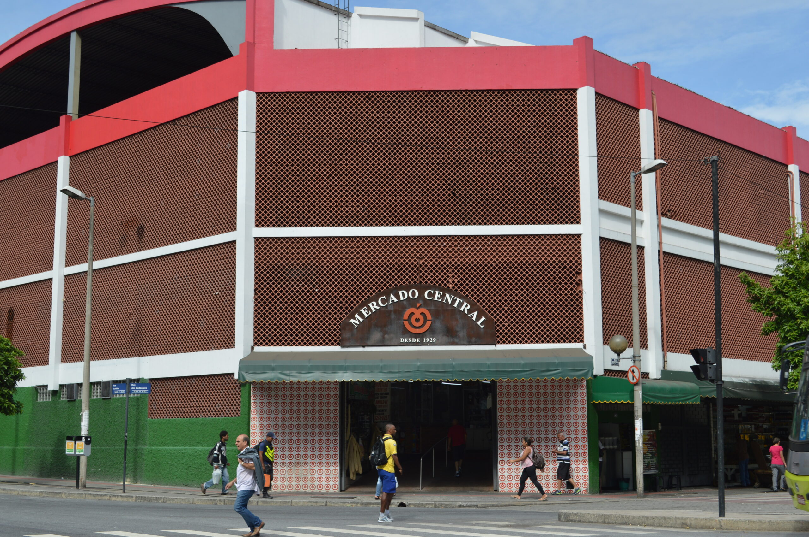
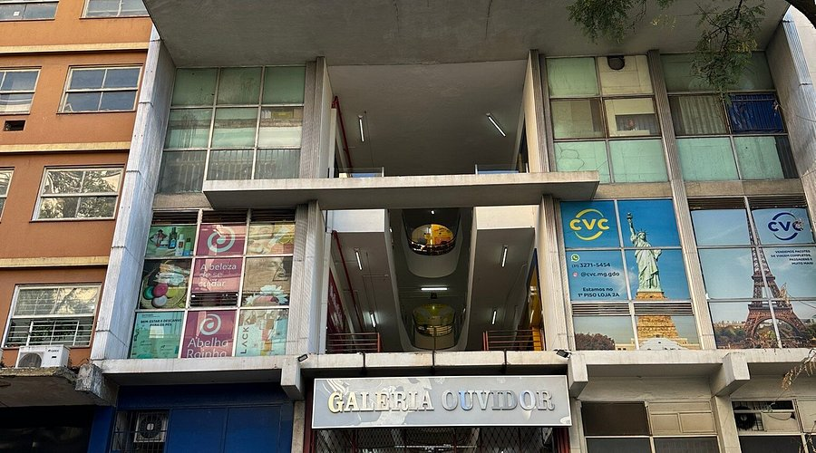
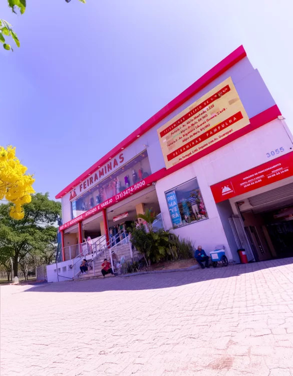
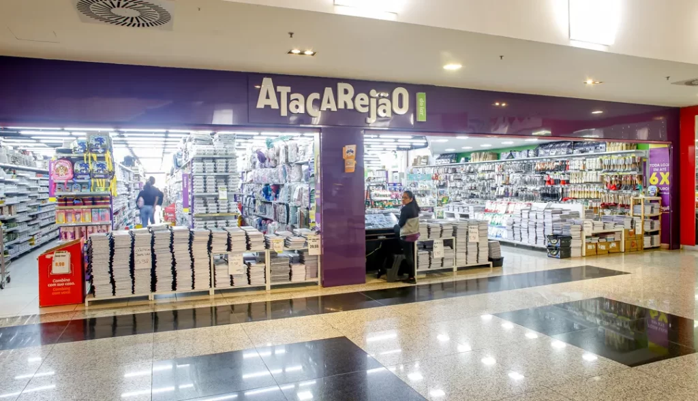
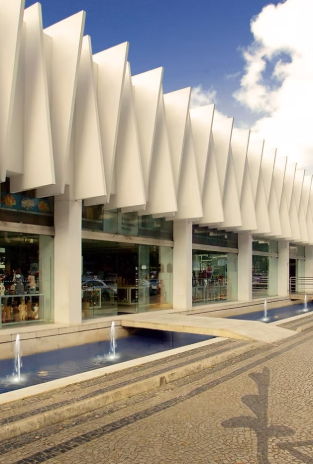

Principais Lojas Tradicionais de Minas
#1 Mercado Central de BH

Descrição:
O Mercado Central de Belo Horizonte, inaugurado em 1929, é o coração cultural e gastronômico da capital mineira. Seus corredores são famosos por reunir queijo minas, doces, temperos e o tradicional fígado com jiló, preservando a identidade e a história de Minas Gerais.
Localização:
Avenida Augusto de Lima, 744 - Centro, Belo Horizonte - MG, CEP 30190-002.
Visitas:
1.200.000
#2 Galeria do Ouvidor BH

Descrição:
A Galeria do Ouvidor é um dos centros comerciais mais tradicionais e movimentados de Belo Horizonte. Inaugurada na década de 1960, ela é famosa por sua enorme variedade de lojas de artesanato, artigos de armarinho, fantasias, beleza e serviços, sendo um verdadeiro ícone do comércio popular no centro da capital.
Localização:
Rua São Paulo, 925 (ou Avenida Afonso Pena, 974) - Centro, Belo Horizonte - MG, CEP 30170-131.
Visitas:
900.000
#3 DiamondMall

Descrição:
O DiamondMall é um dos shopping centers mais sofisticados de Belo Horizonte. Administrado pela Multiplan, o espaço destaca-se por sua arquitetura moderna, ambiente elegante e um mix de lojas de alto padrão, além de uma excelente infraestrutura de gastronomia e lazer localizada em uma região nobre da capital.
Localização:
Avenida Olegário Maciel, 1600 - Lourdes, Belo Horizonte - MG, CEP 30180-111.
Visitas:
850.000
#4 BH Shopping

Descrição:
O DiamondMall é um dos shopping centers mais sofisticados de Belo Horizonte. Administrado pela Multiplan, o espaço destaca-se por sua arquitetura moderna, ambiente elegante e um mix de lojas de alto padrão, além de uma excelente infraestrutura de gastronomia e lazer localizada em uma região nobre da capital.
Localização:
Avenida Olegário Maciel, 1600 - Lourdes, Belo Horizonte - MG, CEP 30180-111.
Visitas:
750.000
#5 Roça Capital

Descrição:
O Roça Capital é um dos empórios mais charmosos e renomados de Belo Horizonte, famoso por valorizar a cultura queijeira e os produtores artesanais de Minas Gerais. Localizado no Mercado Central, o espaço é referência para quem busca queijos premiados, cafés especiais, doces de corte e a autêntica gastronomia caipira mineira.
Localização:
Avenida Augusto de Lima, 744 (Loja 132/134 - Dentro do Mercado Central) - Centro, Belo Horizonte - MG, CEP 30190-002.
Visitas:
650.000
#6 Feira Hippie

Descrição:
A Feira Hippie de Belo Horizonte é a maior feira de artesanato a céu aberto da América Latina. Realizada tradicionalmente aos domingos, ela transforma o centro da cidade em um enorme corredor de criatividade, oferecendo uma variedade imensa de produtos que vão desde artes plásticas, esculturas e artesanatos até vestuário, calçados e comidas típicas mineiras.
Localização:
Avenida Afonso Pena, s/n (entre a Rua da Bahia e a Rua Guajajaras) - Centro, Belo Horizonte - MG, CEP 30130-009.
Visitas:
620.000
#7 Feiraminas

Descrição:
A Feiraminas (Feira de Artesanato da Avenida Afonso Pena) é um dos maiores e mais tradicionais acontecimentos culturais e comerciais de Belo Horizonte. Realizada aos domingos, ela reúne milhares de expositores que oferecem o melhor do artesanato mineiro, vestuário, calçados, decoração e a deliciosa culinária típica do estado.
Localização:
Avenida Afonso Pena, s/n (entre a Rua da Bahia e a Praça Sete) - Centro, Belo Horizonte - MG, CEP 30130-009.
Visitas:
550.000
#8 Atacarejão do Lar

Descrição:
O Atacarejão do Lar é uma das lojas mais procuradas no centro de Belo Horizonte para quem busca utilidades domésticas, decoração, brinquedos e artigos para o lar. Famoso por vender tanto no varejo quanto no atacado com preços competitivos, o espaço vive movimentado por pessoas que querem renovar a casa ou comprar suprimentos em grande quantidade.
Localização:
Avenida Paraná, 429 - Centro, Belo Horizonte - MG, CEP 30120-011.
Visitas:
450.000
#9 ceart

Descrição:
O CEART é o Centro de Artesanato Mineiro, um espaço tradicional voltado para a preservação e valorização da cultura do estado. Localizado no icônico complexo do Palácio das Artes, ele reúne e comercializa obras de arte e peças artesanais legítimas feitas por produtores de diversas regiões de Minas Gerais, sendo referência para colecionadores e turistas.
Localização:
Avenida Afonso Pena, 1537 (Centro de Artesanato Mineiro - Palácio das Artes) - Centro, Belo Horizonte - MG, CEP 30130-005.
Visitas:
350.000
#10 Empório Vó Olívia

Descrição:
O Empório Vó Olívia é uma das lojas mais charmosas e queridas de Belo Horizonte para quem busca o verdadeiro sabor da roça. O espaço é famoso por sua ambientação acolhedora e pela altíssima qualidade em queijos artesanais premiados, doces mineiros de tacho, cafés especiais, cachaças selecionadas e biscoitos caseiros que resgatam as tradições afetivas de Minas Gerais.
Localização:
Avenida Augusto de Lima, 744 (Loja 282, dentro do Mercado Central) - Centro, Belo Horizonte - MG, CEP 30190-002.
Visitas:
350.000